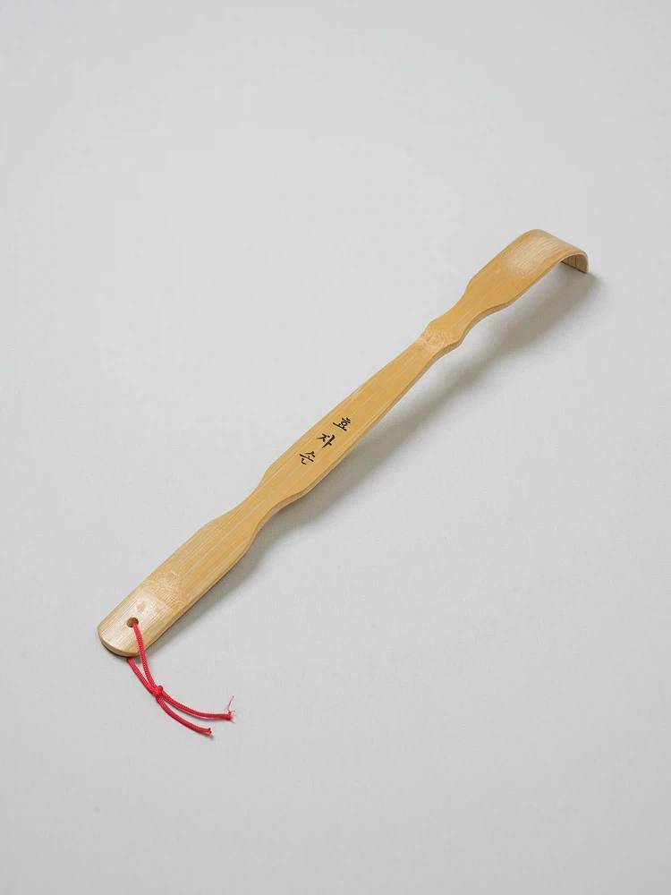

단돈 3천원으로 한국인 긁는 법
댓글
더 싸게 구매도 가능
더 저가로 가면 이빨 갈라져서 개긁힘
하 시발 긁히네
개도 긁는군
알리에서 6개 3천원에 구매함
뿐이는 어디 사투리에여?
충청도
고마워여
뿐이 자주 보여서 궁금했음
내가 무료로 긁어줄게 등 좀 보여줘
근디 저걸로 외국인도 긁을 수 있음 심지어 잘 긁힘
수학여행 가서 사면 2만원임
할머니 ㅋㅋㅋㅋ 긁?
시-원(이가톤으로)


이가톤으로는 시발 ㅋㅋㅋㅋ
효자손이 3천원이나해?
아으 션하다
특징 : 잘긁힘

다이소가면 해골뼈다구같이 생긴거 2000원에 살 수 있어
긁긁
지ㆍ금 이걸밭드시
저거 1천원임. 다이소에서도 천원
제발 긁
갑자기 스까이림에서 효자손 무기 모드 만든놈이 생각나는구만... 자체 불속성 부여하고 火효자손이라고 드립치던데
천원이면가능
-긁- 어우 시원해
사야겠군
어으 션하다
어흐어흐
3천원 뿐이 안함?